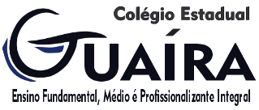

Projeto Cata-cata

Curitiba é uma cidade conhecida por sua preocupação com a sustentabilidade e o meio ambiente. O Bairro Parolin, localizado na região central da cidade, abriga uma comunidade diversa e acolhedora. Neste bairro, encontramos uma equipe de catadores comprometidos com a coleta seletiva e a preservação do meio ambiente.
Nós não podemos mudar o mundo, mas podemos mudar a comunidade de onde moramos, crescemos e vivemos. Com isso, nós estudantes do Colégio Guaíra, criamos este site com informações de contato de alguns catadores da comunidade Parolin, que se dispuzeram a nos ajudar com o projeto.